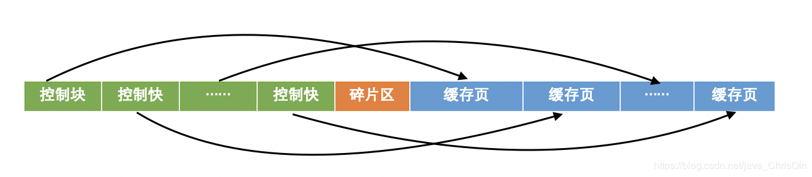
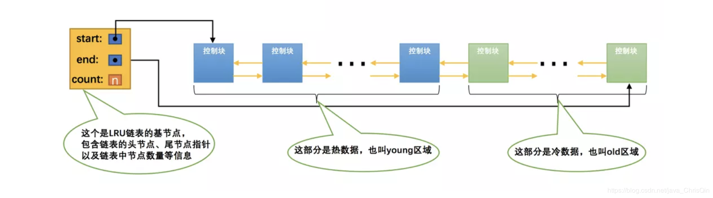

程序员的读书历程：《x语言入门》—>《x语言应用实践》—>《x语言高阶编程》—>《x语言的科学与艺术》—>《编程之美》—>《编程之道》—>《编程之禅》—>《颈椎病康复指南》。
buffer pool
一、基础
即使只需要访问某个数据页中的一条记录，InnoDB也会把该记录所在的整个页中的所有数据加载到内存中，查询完成之后也并不急于释放该内存，而是将该页的数据缓存起来。在缓存该数据页时，InnoDB会向操作系统申请一块连续的内存空间作为缓存区，该缓存区就叫作Buffer Pool（中文名：缓冲池）。硬盘在读写速度上相比内存有着数量级差距，如果每次读写都要从磁盘加载相应数据页，DB的效率就上不来，因而为了化解这个困局，几乎所有的DB都会把缓存池当做标配（在内存中开辟的一整块空间，由引擎利用一些命中算法和淘汰算法负责维护和管理）。
change buffer则更进一步，把在内存中更新就能可以立即返回执行结果并且满足一致性约束（显式或隐式定义的约束条件）的记录也暂时放在缓存池中，这样大大减少了磁盘IO操作的几率。
InnoDB的数据是按数据页为单位来读写的，也就是说当需要读一条记录的时候，并不是将这个记录本身从磁盘读出来，而是以页为单位将其整体读入内存。
在 InnoDB 中，每个数据页的大小默认是 16KB。
Buffer Pool的组成示意图如下：控制块区+碎片区+缓存页区，Buffer Pool管理缓存页区的方式和磁盘管理数据页的方式是相同的，默认都是16KB，一个缓存也与一个控制块是一一对应的，控制块中存储着对应的缓存页的信息，比如该页（指在磁盘中存储着的数据页）属的表空间号、页号、该缓存页在Buffer Pool中地址、链表节点信息、锁信息和LSN信息。

free链表：由空闲控制块（空闲的控制块即指对应的缓存页空间还没有被使用）组成的链表，用来表明Buffer Pool中哪些缓存页是空闲可用的。每当从磁盘加载一个数据页到Buffer Pool时，就从free链表中取出一个空闲的缓存页，并将数据页对应的信息（如所属的表空间号、页号等信息）写入到对应的控制块中，然后从free链表中移除该节点。（free链表的结构示意图请参考lru链表）
flush链表：如果缓存页中的数据被修改，在被同步刷新到磁盘之前，这些被更新的数据称为脏数据，这些被更新的缓存页被称为脏页，由这些脏页所对应的控制块组成的链表叫作flush链表，其组成结构和示意图与free链表相同。（free链表的结构示意图请参考lru链表）
lru链表：Buffer Pool的内存空间是有限的，当Buffer Pool中的缓存页都已经被使用完时，继续加载新的数据页到Buffer Pool中时就需要淘汰Buffer Pool中的部分缓存页，lru链表就是按照”最近最少使用“原则对缓存页进行淘汰。lru链表的组成和示意图与free链表和flush链表的相同。访问某个数据页（即查询数据）时，LRU链表的处理逻辑如下：
- 如果该数据页不在Buffer Pool中，那么就从磁盘中将该数据页加载到Buffer Pool的缓存页中，并将该缓存页对应的控制块移到lru链表的头部；
- 如果该数据页已经被缓存到Buffer Pool中，则将该缓存页对应的控制块移到lru链表的头部。
为了解决Buffer Pool的缓存命中率可能会较低的情况（InnoDB的预读机制和全表扫描都会导致缓存命中率降低），按照缓存页数据被访问到的频次将lru链表分为两个区域：young区域和old区域，young区域控制块对应的缓存页中的数据是访问频率比较高的区域，这部分数据叫热数据；old区域缓存快对应的缓存页中的数据是访问频次较低的区域，这部分数据叫冷数据，示意图如下。young区域和old区域按照一定的比例将lru链表切分成两段，这个比例值使用系统变量innodb_old_blocks_pct进行设置。磁盘中的数据页首次被加载到Buffer Pool时会先放到old区域的头部，如果该缓存页再次被访问到时的时间间隔大于innodb_old_blocks_time的值时（该值的设定是为了防止全表扫描时不常用到的数据页被加载到Buffer Pool从而淘汰掉使用率较高的缓存页），该缓存页对应的控制块会被移动到young区域的头部。

刷新脏页到磁盘：后台有专门的线程负责每隔一段时间把脏页刷新到磁盘，该过程为异步过程，所以不会影响用户线程的正常运行。刷新脏页有两种方式：
- 从lru链表的冷数据中刷新一部分页面到磁盘中；
- 从flush链表中刷新一部分脏页到磁盘中。
有时后台线程刷新脏页的进度比较慢，导致用户线程在准备加载一个数据页到Buffer Pool中时没有缓存页可用，此时用户线程会查看lru链表尾部中有没有未修改的页面（即不是脏页，脏页不能直接释放）可以直接释放，如果没有（即LRU链表尾部的缓存页都是脏页），用户线程会先将LRU链表尾部的单个脏页同步刷新到磁盘然后释放该脏页所占用的缓存页空间，最后再将要访问的数据页加载到该释放的缓存页中，这样的一个过程会导致用户线程的速度特别慢，因为用户线程同步刷新脏页到磁盘需要与磁盘进行交互，和磁盘交互的速度特别慢。
当需要更新一个数据页时，如果数据页在内存中就直接更新，同时还要记下redo log；而如果这个数据页还没有在内存中的话，在不影响数据一致性的前提下，InooDB会将这些更新操作缓存在change buffer中，同样要记下redo log，这样就不需要从磁盘中读入这个数据页了。
change buffer
当需要更新一个数据页时，如果数据页在内存中就直接更新，同时还要记下redo log；而如果这个数据页还没有在内存中的话，在不影响数据一致性的前提下，InooDB会将这些更新操作缓存在change buffer中，同样要记下redo log，这样就不需要从磁盘中读入这个数据页了。在下次查询需要访问这个数据页的时候，将数据页读入内存，然后执行change buffer中与这个页有关的操作。通过这种方式就能保证这个数据逻辑的正确性。
虽然名字叫作
change buffer，实际上它是可以持久化的数据。也就是说，change buffer在内存中有拷贝，也会被写入到磁盘上。
change buffer用的是buffer pool里的内存，因此不能无限增大。change buffer的大小，可以通过参数innodb_change_buffer_max_size来动态设置。这个参数设置为50的时候，表示change buffer的大小最多只能占用buffer pool的 50%。
将change buffer中的操作应用到原数据页，得到最新结果的过程称为 merge，时机是:
- 访问这个数据页会触发 merge
- 系统有后台线程会定期 merge。
- 在数据库正常关闭（shutdown）的过程中，会执行 merge 操作。
二、使用场景
对于唯一索引来说，所有的更新操作都要先判断这个操作是否违反唯一性约束。也就是必须先查询看有没有已经存在才能改，而这必须要将数据页读入内存才能判断。如果都已经读入到内存了，那直接更新内存会更快，就没必要使用change buffer了。因此，唯一索引的更新就不能使用change buffer，实际上也只有普通索引可以使用。
因为merge的时候是真正进行数据更新的时刻，而change buffer的主要目的就是将记录的变更动作缓存下来，所以在一个数据页做merge之前，change buffer记录的变更越多（也就是这个页面上要更新的次数越多），收益就越大。因此，对于写多读少的业务来说，页面在写完以后马上被访问到的概率比较小，此时change buffer的使用效果最好，这种业务模型常见的就是账单类、日志类的系统。
反过来，假设一个业务的更新模式是写入之后马上会做查询，那么即使满足了条件将更新先记录在change buffer，但之后由于马上要访问这个数据页会立即触发merge过程，这样随机访问IO的次数不会减少，反而增加了change buffer的维护代价。所以，对于这种业务模式来说change buffer反而起到了副作用。